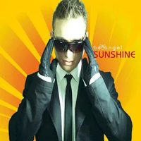

Discografia.
124 singoli e 62 remix dal 1994 al 2026. Anno per anno, dall'ultimo all'indietro: le uscite a suo nome e con i suoi alias, i remix fatti per altri artisti, e i pezzi nati per stare dentro una compilation.
2026
3 singoli


2025
3 singoli


2024
5 singoli


2023
7 singoli


2022
5 singoli


2021
1 singolo
2020
1 singolo
2019
2 singoli

2018
8 singoli · 2 remix


2017
6 singoli


2016
5 singoli · 2 remix


2015
10 singoli · 1 remix
Mork
con Castellari

Take Your Breath
con Andrea Masullo
video

Party With You
con Get Far, Jeffrey Jey
video

Ain't No Sunshine
con Simioli, Scarlet
video

Sunshine & Happiness
con Scarlet
video

Calling You
con Simioli, Scarlet
video

Waterfall
remix per Claudio Caccini, Carl Fanini

Be Your
come System3
inedito

Gettin' Up
come Phunkerz
inedito
Oh Song
come Phunkerz
inedito
Pump Up The House
come System3
inedito
2014
7 singoli · 3 remix
Believe In Me
con Alex Gaudino, Max C
video

Just The Way You Are

You And Me
con Andrea Masullo
video

Mundoo
con Digital Bounze

Gorbaciov

La Rumba
remix per Samuel Kimko', Edward Sanchez, Laura S.

Start It Over
remix per Denny Berland, Alicia Madison
White Tone
remix per Claudio Caccini, Dave P.

Starlight
con Daniele Macchi, Ruby Friedman
inedito
Way Out
come System3
inedito
2013
8 singoli · 7 remix
Touch The Sky
con Amanda Wilson
video

Mash App
con Starclubbers
video

Stormy Winds
video

Drop Da Beat
video

Fly Away
remix per Claudio Caccini & CeCe Rogers

Party Don't Stop
remix per Sergio Mauri feat. Shelly Poole
video

Breakin' The Heart
remix per Andrea Masullo
video

Bringing Me Down
remix per Andrea Masullo

Ahi Na Ma
remix per Don Cash & Baudo

Sicko
remix per George Acosta & Henry John Morgan

Be Like Me
con Eako
video

Ready For Love
remix per Claudio Caccini, Carl Fanini

Heartquake
come System3
inedito
Overtime
come System3
inedito
Tears
come Phunkerz
inedito
2012
9 singoli · 7 remix
Rock Some Noise
con Rainbowlead
video

Turn You On
con Henry John Morgan (HJM), The Audio Dogs
video

Cattivik
con Rainbowlead, Mastro J

You're
con Formal Monkeys
video

Tiger
con Alex Addea
video

Criminal 4 Love
remix per Jack Ross, Ricky Castelli, LDB, LA19

Sweet Love
remix per Liviu Hodor feat. Mona

We Got A Love
remix per Claudio Caccini

I Can Change
remix per Falaska Contest
video

You Got To Release
remix per Samuele Sartini & Peyton

Dream Girl
remix per Andrea Masullo, Chaka Blackmon

Party Go! (feat. Wendy D. Lewis)
remix per Andrea Masullo

305
come System3
inedito
Change The World
come Phunkerz
inedito
Festival
come Phunkerz
inedito
Seven Days
come Phunkerz
inedito
2011
4 singoli · 7 remix
Mariguana Cha-Cha-Cha
come The Fabulous
video

La Musica Tremenda
remix per Pee4Tee feat. Emmanuela

Desert Rain
remix per Edward Maya feat. Vika Jigulina

Fantasy
remix per Leonia

I Like It
remix per Luca Ruco
Non Ce L'Hai
remix per Monnalisa
Twilight
remix per Andrea Paci & Francesco Ienco feat. Andrea Love
Just Believe
remix per Luca Ruco feat. Sherrita
Come Into This Side
come Phunkerz
inedito
From Paris 2 Rome
come System3
inedito
You're On My Own
come System3
inedito
2010
3 singoli · 2 remix


2009
4 singoli · 7 remix
A.R.I.A.
con Ranucci & Pelusi

Life Goes On

Side By Side
con Andy P
video

Enjoy The Silence
remix per Falaska Contest

Leave The World Behind
remix per Axwell / Ingrosso / Angello / Laidback Luke feat. Deborah Cox

Sunshine / Child
remix per Be Angel

Scared Of Me
remix per Fedde Le Grand feat. Mitch Crown

Where Did You Go
con Max C

I Will Follow
remix per Bingo Players, Dan'thony
Last Night A Dj Saved My Life
remix per Promise Land
Taking Control Of You
remix per Greg Cerrone
2008
5 singoli · 5 remix


2007
6 singoli · 2 remix


2006
3 singoli · 6 remix
Vibe
con Lizzy B.

C'est L'Amour
remix per Sophie

Dance & Breakfast
remix per Danijay

Don't Close Your Eyes
remix per Be Angel

Until The Morning
remix per Manu L.J.

Speed Of Sound
remix per Club House
Siamo Una Squadra Fortissimi
remix per Checco Zalone

Eurofolk
come Italian Deejays
ineditovideo

The Story Goes On
come Italian Deejays
ineditovideo
2005
6 singoli · 5 remix
Let Me Be
con Promise Land

Running Up / It's Gonna Be
con Roberto Molinaro

Sound Is Back
con Lizzy B.

Crazy Hits (Crazy Christmas Edition)
remix per Crazy Frog

Feel Alright
remix per Manu L.J.

More 'N' More (I Love You)
remix per Haiducii

Semplicemente
remix per Zero Assoluto

Red Code
remix per Roberto Molinaro

Disco Sex
come Mr. Ed
inedito
In Your Time
come Rumble Pit
inedito
No Alla Pirateria
come Rumble Pit
inedito